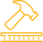

-
Highly Conductive
-

Corrosion Resistant
-

Easy Application
-

Mechanical Stress Resistant
PhantomLink is an essential part of the Nanoleq solution to link stretchable cables to textile electrodes. It can also be used to connect to other sensors, buttons or PCBs. The patch can be applied by hot pressing or simply by ironing.
The PhantomLink connector solution is compatible with any analog and digital signals in e-textiles. Be it for ECG, EMG, EEG or for electrostimulation, PhantomLink provides a reliable and washable connection.
The PhantomTape & ElectroSkin Combined Starter Kit is the best way to learn how to make washable and industry-ready e-textiles entirely based on lamination. It contains 16m PhantomTape X, 12 ElectroSkin electrodes and different textile connector types and tools for turning a garment into a heart rate sensor, muscle activity monitor, electrostimulator and more. The kit provides all the e-textile elements needed up to snap buttons for connections to your electronic module. The snap buttons can be replaced by magnetic/snap buttons or connectors of your choice.
Necessary textile workshop tools for handling lamination and buttons: Hot press or lamination machine (for starters, an iron works as well), textile button press & hole puncher.
Ingredients:
- 12 ElectroSkin electrodes
- 16m PhantomTape X, 1m PhantomTape Light beta
- Insulation patches and PhantomLink connector patches for buttons, PCBs and other connectors
- PhantomLink for combining PhantomTape with ElectroSkin
- Example PCBs with connection pads
- Conductive snap buttons & tools
- Supporting tools for lamination and pressing
- Laminated reference sample for ElectroSkin-PhantomTapeX- button
- SOP documentation
Starter Kit orders include up to 1.5 hours of telephone support with an expert from Nanoleq who will help you with laminating and connecting PhantomTape and ElectroSkin.